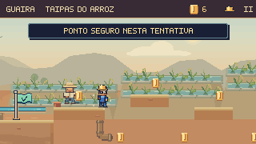
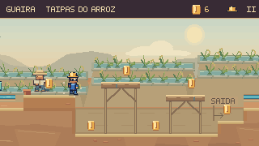
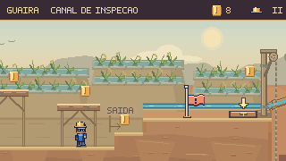
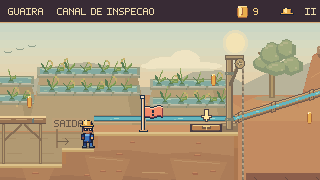
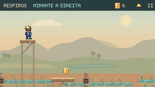
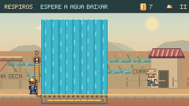
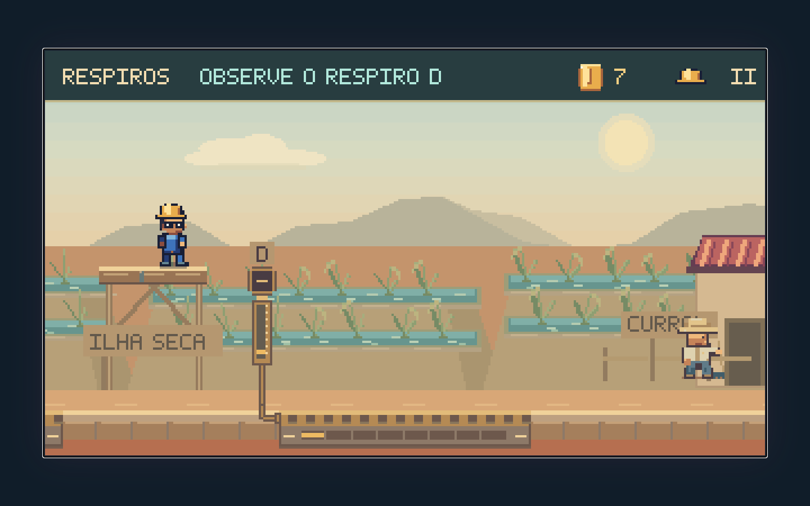

Continuação: oficina e percursos da Câmara de Alívio →
Caminhos do arrozal.
Travessia e Respiros receberam percursos mais legíveis, apoios coerentes com o cenário e alternativas que voltam ao caminho principal. A câmera mostra a escolha antes da ação; a exploração passa a ter entrada, destino e retorno.
O que o jogador vê antes de decidir


O piso do canal aparece antes da descida. As passarelas têm estrutura de madeira e deixam uma passagem por baixo. Um degrau de terra e a indicação de saída mostram onde as duas rotas se encontram.
Mesmos comandos, desde o início, nas duas versões. A física e a câmera são as do jogo; as diferenças de posição resultam das mudanças no percurso. Nenhuma captura usa posicionamento manual de Feka.
Escolha com consequência
Na Travessia, saltar pelas passarelas e explorar o canal produzem trajetos diferentes. Nos Respiros, fechar C torna recuperável um salto curto; manter C funcionando exige alcançar os dois apoios elevados.
Informação dentro do mundo
As grelhas identificam A, B, C e D. O registro e o tubo indicam qual trecho muda. O HUD acompanha oficina, passarela e observação de D; as instruções deixam livre a área do salto.
Travessia · por cima ou por baixo
O trecho central passa a ser uma estrutura de inspeção do arrozal: uma margem de terra, duas passarelas sobre o canal e uma saída em degraus. A rota inferior reencontra a margem antes da segunda comporta e de seu checkpoint. Os andaimes iniciais continuam permitindo praticar saltos sobre a rua segura.


A câmera antecipa as margens das pontes e o fundo do canal. As mudanças de distância de acompanhamento são graduais. A instrução da placa usa a barra superior; a bandeira e o som nativos confirmam o checkpoint sem uma faixa cobrindo o cenário.
Respiros · observar, isolar, explorar
A subida ao registro C agora continua por uma passarela acima do jato e por um mirante dentro da ilha seca. Duas moedas recompensam esse trajeto. De lá, o jogador observa D e desce antes da grelha. Seguir pelo piso, apenas observando os ciclos, continua sendo uma solução completa.


Fechar C permite recuperar um salto curto pelo piso. Com C ativo, dois saltos atravessam a rota alta sem tocar o jato. O mirante não desliga D: o reencontro com o caminho principal preserva o desafio final de leitura da água.
No capítulo do jogo
Os dois percursos foram executados no capítulo principal. A orientação contextual acompanha as novas escolhas, a conclusão é reconhecida e Continuar retorna ao mapa.

Verificação
996 testes de Guaíra aprovados, incluindo 17 novos nesta rodada. Build, validadores e TypeScript aprovados. Os dois percursos completos também passaram no capítulo real e retornaram ao mapa.
Os novos percursos foram conferidos com teclado, toque simulado e movimento reduzido. Os testes incluem saltos curtos, recuperação, pausa, reinício, preservação de moedas e a rota alta com C ativo em 252 momentos do ciclo. O capacete e os pés permanecem dentro da área útil da câmera nas gravações completas.
Também houve execução no capítulo real com teclado e simulação conduzida a 60 Hz. As oito cenas passaram pela conferência de entrada, pausa, estabilidade da imagem e retorno ao mapa; a interface foi verificada em 844 × 390.
Os vídeos capturam comandos ensaiados a 15 quadros por segundo. Demonstram execução e leitura pela câmera; não medem tempo de descoberta. A avaliação de diversão ainda precisa observar jogadores escolhendo as rotas, entendendo C/D e repetindo os desafios.
Decisões e reprodução · Capturas e percursos · Percursos no capítulo · Conferência das oito cenas